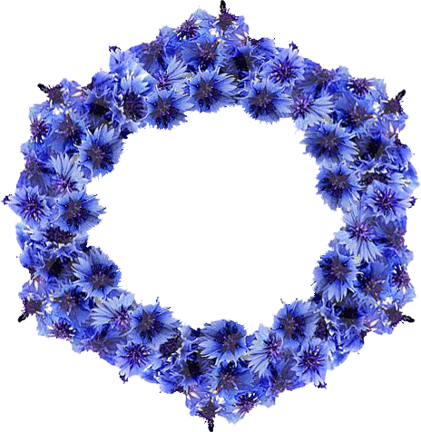

Вобраз Максіма Багдановіча у лірычных творах
Значная частка вершаў прысвечана месцу пахавання М. Багдановіча і яго помніку. У вершах аб Ялце часта сустракаецца вобраз кіпарыса. Калі васілёк – сімвал радзімы, то іншая расліна – кіпарысы – сімвал смерці, спачыну, чужыны і вечнага спакою Багдановіча.
Некалькі вершаў прысвечаны помніку Максіму Багдановічу ў Мінску. Некаторыя паэты фантазіруюць, быццам дух Багдановіча яшчэ недзе блукае, хочуць бачыць яго жывым. Ёсць таксама творы, прысвечаныя спрэчкам вяртання праху паэта на радзіму.
